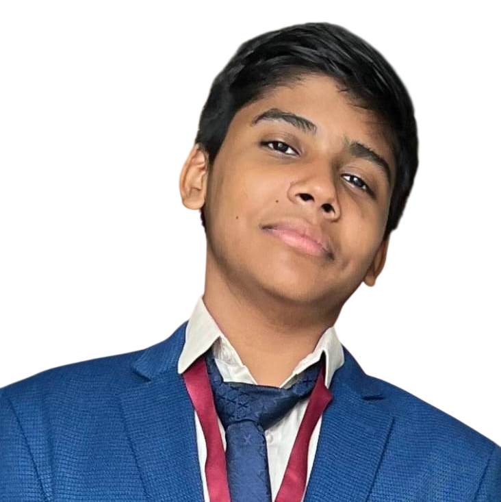

School Literary & Media Coordinator - Student Council (2026-27)
- Oversee the school's literary and media activities for the academic year.
- Coordinate content and coverage for school events and publications.
Class 11 - Commerce | CS Academy, Erode

Welcome to my portfolio.
I am a Class 11 Commerce student at CS Academy, Erode, where I have studied since 2014. This year I serve on the Student Council as the School Literary & Media Coordinator, my second term on the council.
Much of my time outside the classroom goes into Model United Nations. I chaired the WTO at CSMUN VI, represented Iceland and Germany at HMUN '25 and CHEMUN XVII, and led the academic team as Director of Academics for CS Law Summit II. These roles have taught me to research quickly, write clearly and keep a room full of people working towards a shared outcome.
I also handled the technical work for the CS Cultural Fest on behalf of my school this year. Away from all of this, I play badminton.
Journal entries, ledgers, trial balances and final accounts, with a focus on accuracy.
Formal debate, negotiation and resolution drafting, developed across several MUN committees.
Two terms on the Student Council and senior roles at MUN conferences.
Handled the technical work for the CS Cultural Fest.
Drawing and painting in my free time, which also shapes how I think about layout and visual design.
Designing and building websites from scratch, including this portfolio.
Class 11 - Commerce | 2026 - Present
A student of CS Academy since 2014, from primary school through to senior secondary.
CS Academy, Erode | 2026
I am open to internships, volunteering roles and collaborative projects. If you are organising a conference, school event or project and need help with academic planning, chairing, media coverage or technical work, I would be glad to hear from you.
Based in Erode, Tamil Nadu. The quickest way to reach me is by email, or you can leave a message using the form below.
Email: erd_s1401839@csacademy.in